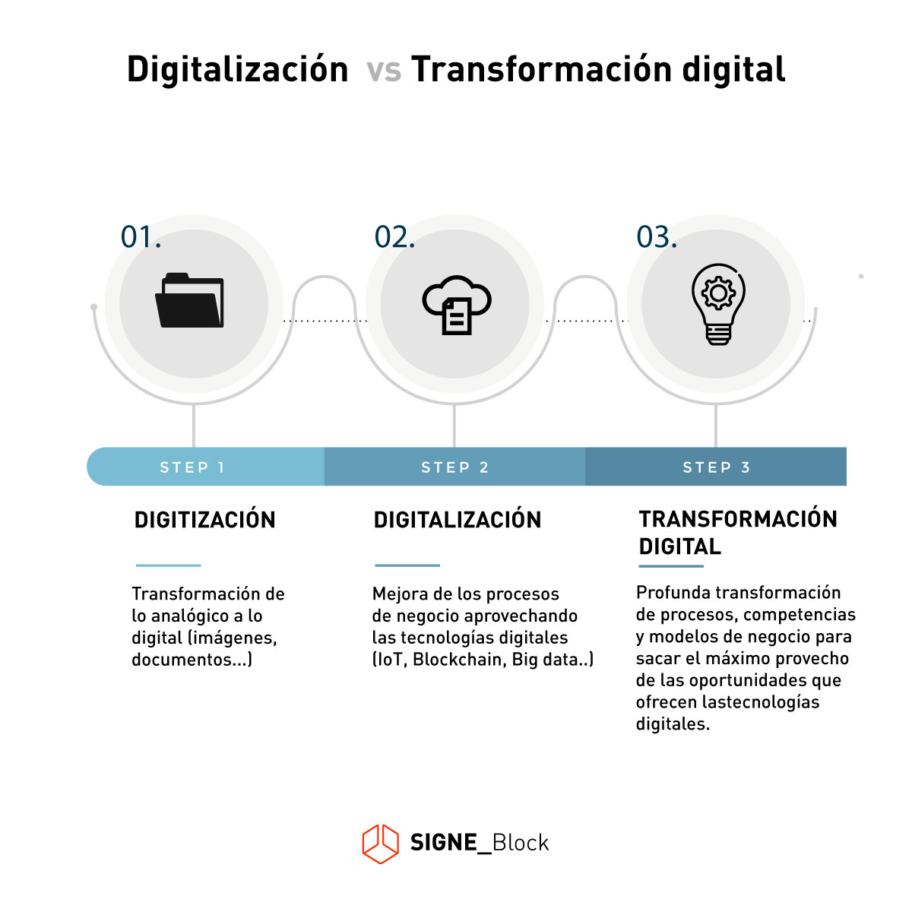
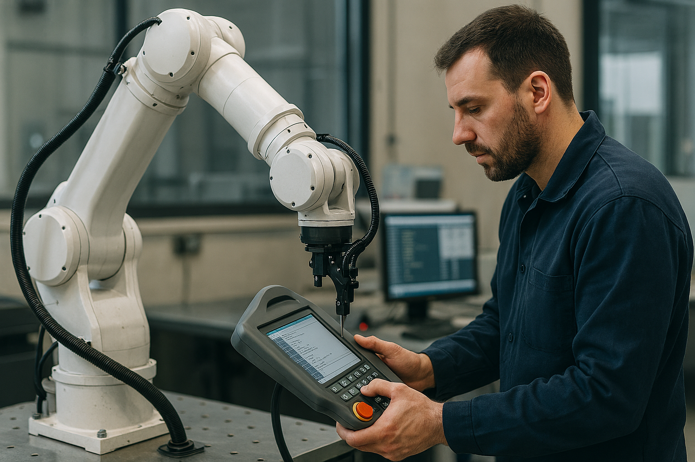
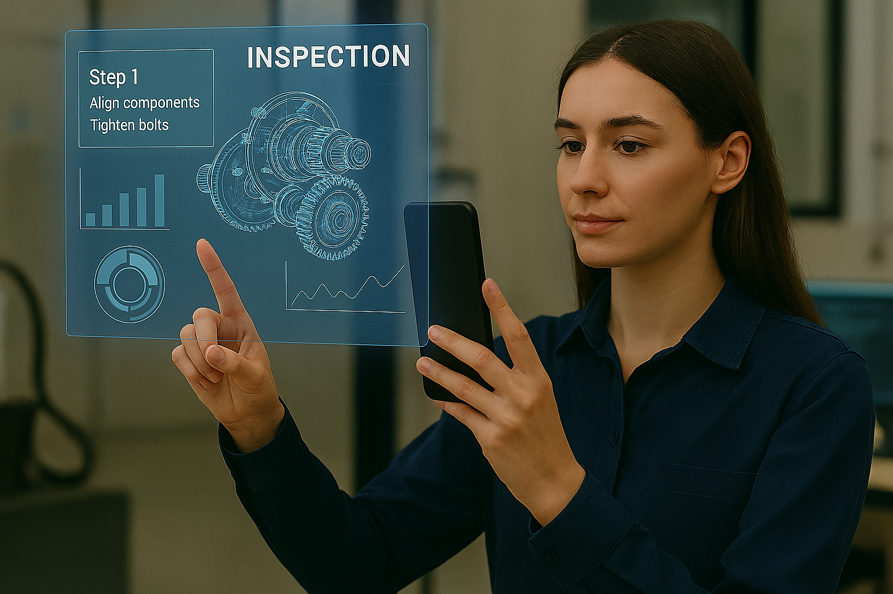
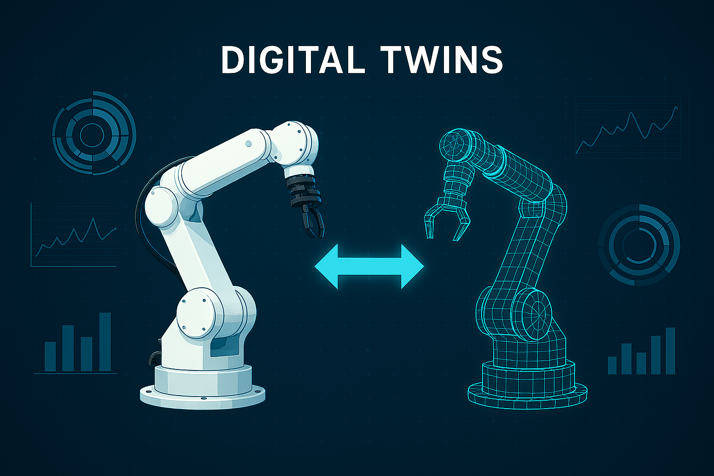

1. Digitalització en els sistemes productius
1. Digitalització i transformació digital
La digitalització i la transformació digital són termes relacionats, però es refereixen a conceptes diferents. La digitalització se centra en el procés de convertir informació, processos i recursos de format no digital a format digital. Implica la conversió d’elements físics, com documents en paper, formularis, processos manuals, etc., a una representació digital. La digitalització facilita la manipulació electrònica de dades, el seu emmagatzematge eficient i el seu processament per sistemes informàtics. En resum, la digitalització és un pas important per a la modernització de processos, però no necessàriament implica un canvi cultural o una transformació completa de l’empresa.
La transformació digital va més enllà de la digitalització. És un canvi integral i profund en la forma en què una organització utilitza la tecnologia per millorar el seu rendiment i assolir els seus objectius estratègics. La transformació digital implica l’adopció de nous models de negoci, la cultura organitzacional i els processos, aprofitant la tecnologia digital per obtindre avantatges competitives.

En resum, mentre que la digitalització es refereix al procés de convertir elements físics en digitals, la transformació digital implica una revisió integral de l’organització per aprofitar al màxim les capacitats digitals i generar canvis significatius en la forma en què opera i es relaciona amb els seus clients. La transformació digital és un procés estratègic i a llarg termini, que va més enllà de l’adopció de tecnologies digitals.
Comparativa
| Aspecte | Digitalització | Transformació digital |
|---|---|---|
| Enfocament principal | Conversió d’elements físics a format digital. | Canvi integral en la forma en què l’organització utilitza la tecnologia per millorar rendiment i assolir objectius estratègics. |
| Abast | Específic i enfocat en la conversió d’elements individuals. | Ampli i abasta aspectes culturals, processos, tecnologia i estratègia empresarial. |
| Objectius | Eficiència operativa, accés més fàcil a la informació i processos més àgils. | Innovació, millora de l’experiència del client, creació de nous models de negoci. |
| Canvi cultural | Pot no estar present. | Fonamental, implica una mentalitat oberta a la innovació i l’adaptabilitat. |
| Estratègia empresarial | Pot no estar alineada amb els objectius generals. | Estretament alineada amb les metes i objectius a llarg termini de l’empresa. |
| Impacte en models de negoci | Menys probable que genere canvis significatius en els models de negoci. | Pot conduir a la reinvenció de models de negoci existents. |
| Enfocament tecnològic | Conversió de processos analògics a digitals. | Incorporació de tecnologies emergents, com IA, IoT, anàlisi de dades, etc. |
| Gestió del canvi | Pot requerir ajustos menors, però no necessàriament una gestió del canvi estructurada. | Essencial, amb estratègies i programes específics per a gestionar el canvi. |
| Escala d’impacte | Impacte a nivell de processos específics. | Impacte a nivell organitzacional i cultural. |
| Visió a llarg termini | A sovint és un pas previ a la transformació digital completa. | És un procés a llarg termini que impulsa l’evolució contínua. |
1.1. Pla de digitalització
Un pla de digitalització ben concebut proporciona un full de ruta estructurat i estratègic que prepara l’empresa per a la transformació digital per diversos motius:
- Diagnòstic i avaluació: permet a l’empresa realitzar un diagnòstic precís del seu estat actual en termes de tecnologia i cultura organitzacional.
- Identificació d’objectius: ajuda a establir objectius clars i mesurables per avaluar el progrés.
- Alineació amb estratègies empresarials: garanteix que la digitalització estiga alineada amb les estratègies comercials i els objectius a llarg termini de l’empresa.
- Assignació de recursos: facilita l’ús òptim de recursos, maximitzant el retorn de la inversió.
- Gestió del canvi: facilita la transició dels empleats i fomenta una cultura orientada a la innovació.
- Avaluació de riscos i seguretat: identifica i aborda riscos associats a la digitalització, especialment en temes de seguretat i protecció de dades.
En resum, un pla de digitalització és essencial per a la transformació digital d’una empresa, ja que estableix una guia clara cap a la implementació de tecnologies digitals en totes les àrees.
Espanya Digital
L’agenda Espanya Digital és el full de ruta per a la transformació digital del país. Els objectius són aprofitar les tecnologies per a generar creixement econòmic, amb programes dirigits a diferents sectors (persones autònomes, pimes, startups, etc.), en àmbits com la connectivitat, la ciberseguretat, la digitalització i l’educació digital.
1.2. Transformació digital
Com ja hem vist, la transformació digital és un procés integral que va més enllà de simplement incorporar noves ferramentes tecnològiques: implica una revisió profunda de l’estratègia empresarial, els processos interns i la cultura organitzacional.
Els aspectes clau en el procés de transformació digital són:
-
Digitalització de processos: implica la tecnificació i automatització dels processos operatius i comercials per a augmentar l’eficiència i reduir la dependència dels processos manuals.
Exemple: implementació de sistemes de gestió empresarial (ERP) per a integrar i optimitzar processos com finances, recursos humans i logística. -
Dades i analítica: ús intensiu de dades per a la presa de decisions informades, anàlisi predictiu i comprensió profunda dels patrons i tendències.
Exemple: aplicació d’anàlisi de dades per a preveure demandes del mercat, personalitzar ofertes i millorar l’eficiència operativa. -
Experiència del client: enfocament en millorar la interacció i l’experiència del client a través de canals digitals, personalització i serveis adaptats a les seues necessitats.
Exemple: desenvolupament de plataformes de comerç electrònic, chatbots i serveis de fidelització del client. -
Col·laboració i comunicació: ús de plataformes digitals per a facilitar la col·laboració interna, compartir informació i millorar la comunicació entre equips i departaments.
Exemple: implementació de ferramentes de col·laboració en línia, com Slack, Trello o Microsoft Teams. -
Innovació: introducció contínua de noves tecnologies i models de negoci per a mantindre’s competitiu en un entorn digital en constant evolució.
Exemple: adopció de tecnologies emergents com intel·ligència artificial, internet de les coses (IoT) o blockchain. -
Canvi cultural: promoure una cultura organitzacional que fomente l’adaptabilitat, l’experimentació i l’acceptació de la tecnologia com a part natural de les operacions diàries.
Exemple: implementació de programes de capacitació i sensibilització per a que els empleats participen en la transformació digital. -
Lideratge executiu: el canvi de cultura ha de vindre des dels líders, que mostren compromís amb la transformació digital i acompanyen els empleats en el procés.
Exemple: assignació de rols de lideratge en cada àrea que assumisquen responsabilitats digitals.
Tipus de transformació digital
Existeixen quatre tipus diferents de transformació digital que una empresa o organització pot dur a terme, segons les seues necessitats i expectatives:
-
Transformació digital de processos empresarials
Persegueix la reenginyeria i optimització de processos i fluxos de treball, interns i externs, mitjançant l’ús de tecnologies digitals.
Exemple: implementació d’eines d’automatització per a eliminar tasques manuals repetitives (envasat de productes, respostes a clients, predicció de reposicions...). -
Transformació digital del model de negoci
Implica la revisió i redefinició de la proposta de valor i la forma en què l’organització genera ingressos i ofereix serveis.
Exemple: el pas d’un negoci artesà local al comerç electrònic. -
Transformació digital del domini empresarial
Fa referència a la incorporació de tecnologies digitals en les operacions i processos específics d’un sector per a millorar l’eficiència i la innovació.
Exemple: ús de sensors, drons o anàlisi de dades per a optimitzar la gestió dels cultius. -
Transformació digital de la cultura de l’organització
Se centra en canviar la cultura i la forma en què les persones dins de l’organització treballen i s’adapten a la innovació i la tecnologia.
Exemple: creació d’una cultura oberta a la innovació i a la incorporació de tecnologies digitals.
Vocabulari
- CRM: customer relationship management, gestió de la relació amb els clients.
- IoT: internet of things, internet de les coses.
Enllaços
-
Índex d’Economia i Societat Digitals (DESI): informe que resumeix els indicadors sobre el rendiment digital d’Europa i el seu progrés. Més informació
-
Empreses locals i artesans del món rural han estat digitalitzats gràcies a Correos, amb iniciatives com Correos Market, un marketplace que facilita la venda de productes sense comissions. Més informació
2. Implantació de la tecnologia d’empresa
En l’actualitat, la integració de la tecnologia digital en les empreses s’ha convertit en un imperatiu estratègic per a les organitzacions que busquen mantindre la seua competitivitat i adaptar-se a un entorn de negocis en constant evolució.
El concepte de tecnologia digital abasta un ampli espectre de ferramentes i sistemes que utilitzen informació codificada en format binari. Des de l’automatització de processos fins a l’anàlisi de dades, la tecnologia digital aborda diverses àrees que poden transformar la manera en què les empreses operen.
La implantació de tecnologia digital s’ha convertit en un component essencial de l’estratègia empresarial moderna. La capacitat d’aprofitar els avantatges de la tecnologia digital no sols fa que l’empresa siga més eficient, sinó que també impulse la innovació, la diferenciació en el mercat i la capacitat d’adaptar-se als canvis.
2.1. Impacte en l’estructura organitzativa
La introducció de la tecnologia digital en l’empresa sovint comporta canvis en l’estructura organitzativa.
- Quan el nivell d’integració és baix, l’impacte en l’estructura és mínim i es redueix a serveis prestats per empreses externes especialitzades en l’àmbit tecnològic.
- Quan el nivell d’integració és alt, s’habiliten sectors i nous rols especialitzats, com equips de manteniment de sistemes, desenvolupadors de programari o analistes de dades.
2.2. Transformació de processos i operacions
Un dels beneficis més notables de la tecnologia digital és la capacitat d’automatitzar processos que abans eren manuals, cosa que condueix a una millora de l’eficiència operativa.
Beneficis clau:
- Reducció d’errors: en passar de processos manuals a automatitzats.
- Alliberament de recursos: tant materials com humans, per a tasques estratègiques no automatitzables.
Per exemple, l’ús de sistemes ERP (Enterprise Resource Planning) és fonamental. Un ERP integra i optimitza diverses funcions (comptabilitat, inventari, producció, vendes...), millora l’eficiència operativa i facilita la presa de decisions.
Vocabulari
ERP (Enterprise Resource Planning): sistema de planificació de recursos empresarials.
2.3. Impacte en la cultura de l’organització
La implantació de tecnologia digital requereix un canvi cultural cap a la innovació i l’adaptabilitat.
- Les organitzacions han de fomentar una mentalitat oberta al canvi i a l’experimentació.
- És essencial invertir en programes de formació per dotar els empleats de les habilitats digitals necessàries.
La comunicació efectiva i la participació del personal són clau per superar la resistència al canvi (desafiament molt comú a la introducció d'innovacions digitals) i afavorir l’adopció de noves tecnologies.
2.4. Relació amb els clients i el mercat
La tecnologia digital és un facilitador clau per millorar l’experiència del client.
- Les plataformes de comerç electrònic i l’anàlisi de dades permeten oferir productes i serveis adaptats a necessitats individuals.
- Aquelles empreses que adopten tecnologies emergents (RA, IoT) poden anticipar-se millor a les demandes canviants i guanyar avantatge competitiu.
3. Entorns IT i OT
Els termes tecnologia de la informació (IT) i tecnologia operativa (OT) es refereixen a dos àmbits distints de la tecnologia dins d’una organització; cadascun amb funcions i enfocaments específics.
- IT: information technology, o tecnologia de la informació.
- OT: operational technology, o tecnologia operativa.
3.1. Entorn IT
L’entorn IT es refereix al conjunt de tecnologies i sistemes utilitzats per gestionar la informació i les dades d’una organització. Tradicionalment, l’entorn IT s’ha centrat en la infraestructura de tecnologia, la gestió de dades, el desenvolupament de software i l’administració dels sistemes.
Les principals característiques d’un entorn IT són:
- Enfocament en la informació: l’entorn IT està orientat principalment a l’emmagatzematge, processament i transmissió d’informació i dades.
- Sistemes empresarials: es composa de sistemes empresarials, com ara sistemes ERP, bases de dades, servidors i xarxes de computadors.
- Desenvolupament de software: el desenvolupament, implementació i manteniment d’aplicacions utilitzades a l’organització.
- Comunicacions: gestiona les infraestructures de comunicació, incloent xarxes locals, serveis de correu electrònic i comunicacions unificades.
- Ciberseguretat: la seguretat de tots els elements mencionats anteriorment és una prioritat clau en l’IT. S’implementen mesures per protegir la integritat, la confidencialitat i la disponibilitat de les dades, que és l’actiu de l’organització.
En una empresa, els departaments típics que constitueixen entorns IT solen ser responsables de la gestió, implementació i manteniment de sistemes i tecnologies relacionades amb la informació. Alguns dels seus departaments són:
- Departament d’IT: comunament conegut com a departament d’informàtica, és el departament central encarregat de la gestió general de la infraestructura tecnològica de l’empresa. Inclou funcions com suport tècnic, gestió de xarxes, administració de servidors i seguretat informàtica, entre d’altres.
- Departament de desenvolupament de software: este departament s’ocupa del disseny, desenvolupament, implementació i manteniment de software empresarial. Inclou programadors, desenvolupadors, arquitectes de software i analistes.
- Departament d’operacions de IT: també conegut com a departament d’administració de sistemes, es centra en l’administració diària dels sistemes i recursos tecnològics. Esto pot incloure la gestió de servidors, bases de dades, xarxes, i la supervisió de la disponibilitat i el rendiment de los sistemes informàtics.
- Departament de ciberseguretat: s’encarrega de garantir la seguretat de les dades i la infraestructura tecnològica. Inclou mesures com la gestió d’identitats, el control d’accés, la protecció contra amenaces i la resposta a incidents de seguretat.
- Departament de projectes tecnològics: responsable de planificar, coordinar i dur a terme projectes relacionats amb la implementació de noves tecnologies, actualitzacions de sistemes, migracions, etc.
- Departament de suport tècnic: proporciona assistència i solució de problemes als usuaris interns de l’empresa i, en alguns casos, també als clients. Inclou serveis com help desk, resolució de problemes de hardware i software, i capacitació tècnica.
- Departament de gestió de dades i analítiques: s’ocupa de la gestió de dades empresarials, bases de dades, anàlisis de dades i generació d’informes. Inclou rols com administradors de bases de dades i analistes de dades.
- Departament d’infraestructura tecnològica: responsable de la planificació, implementació i gestió de la infraestructura tecnològica, que inclou servidors, emmagatzematge, xarxes i altres components de hardware.
- Departament d’arquitectura empresarial: es carrega de dissenyar i mantindre l’arquitectura tecnològica global de l’empresa, assegurant que tots els sistemes i tecnologies estiguen alineats amb els objectius organitzacionals.
- Departament d’innovació i estratègia tecnològica: encarregat d’explorar noves tecnologies, avaluar la seua aplicabilitat a l’empresa i desenvolupar estratègies per a l’adopció de tecnologies emergents.
Estos departaments col·laboren per a garantir que la infraestructura tecnològica de l’empresa siga eficient, segura i complisca amb els objectius comercials. L’estructura exacta, així com el número i les responsabilitats, pot variar segons la mida i la indústria de l’empresa.
Vocabulari
Help desk
Un help desk és un equip centralitzat dins d’una empresa que atén empleats o clients de forma massiva.
Per a poder dur-ho a terme solen utilitzar un programa que gestiona les converses.
Enllaços
La ciberseguretat és una de les majors preocupacions que tenen les grans empreses hui en dia. Vols veure quants ciberatacs es estan produint ara mateix?
L’empresa Kaspersky ha creat un mapa interactiu de ciberamenaces on pots veure les deteccions d’atac que està percebent este antivirus en temps real: 👉 https://cybermap.kaspersky.com/es
3.2. Entorn OT
L’entorn OT es refereix a la tecnologia utilitzada per a supervisar i controlar els dispositius i processos físics en l’àmbit operatiu d’una organització. Aquest entorn es troba comunament en indústries manufactureres, plantes de generació o sistemes de control industrial, entre altres.
Les principals característiques d’un entorn OT són:
- Enfocament en operacions físiques: l’entorn OT se centra en els sistemes que interactuen directament amb els processos físics del món real, com ara màquines, sensors o dispositius de control.
- Temps real: l’OT sovint opera en temps real per a controlar i supervisar processos crítics que requereixen respostes immediates.
- Seguretat industrial: històricament enfocada a garantir la seguretat física de les operacions i la protecció dels treballadors. Actualment és un àrea clau des del punt de vista de la ciberseguretat, on el món IT i OT conflueixen.
- Automatització industrial: inclou sistemes de control industrial (SCADA, PLC, DCS...) i sistemes d’automatització de processos.
- Dispositius connectats: implica l’ús de sensors i dispositius connectats per a recopilar dades de l’entorn físic.

Vocabulari
- SCADA: supervisory control and data acquisition, o control supervisor i adquisició de dades.
- PLC: programmable logic controller, o controladors lògics programables.
- DCS: distributed control system, o sistema de control distribuït.
3.3. Convergència d’IT i OT
Tradicionalment, els entorns IT i OT han funcionat de manera independent, cadascun amb les seues pròpies responsabilitats i estructures tecnològiques. Aquests entorns separats es reflectien en l’ús de diferents tecnologies, estàndards, protocols o fins i tot models de governança.
Tanmateix, amb l’avanç de la tecnologia, l’entorn OT està adoptant tecnologies similars a les de l’entorn IT, per la qual cosa podem dir que s’està produint una convergència.
Aquesta convergència IT-OT implica la integració i alineació de les tecnologies i processos que històricament havien estat separats.
Factors principals que impulsen la convergència IT-OT
- Digitalització dels processos industrials: la creixent necessitat de digitalitzar i optimitzar processos industrials ha impulsat la convergència per a aprofitar les tecnologies digitals en temps real.
- IoT: la proliferació de dispositius IoT connectats tant en l’àmbit empresarial com en operacions físiques ha creat la necessitat d’una convergència efectiva per a gestionar i analitzar grans quantitats de dades generades.
- Necessitat de dades unificades: la procedència de dades de fonts diverses (negocis interns, sensors, dispositius connectats a Internet, fonts externes de xarxes socials, fonts estructurades i no estructurades) impulsa la necessitat d’una integració per a obtindre una base sòlida de supervisió empresarial i millor presa de decisions.
Beneficis d’una convergència IT-OT adequada
- Eficiència operativa millorada: optimització d’operacions i reducció de costos a través de la digitalització dels processos.
- Innovació i agilitat: la integració de tecnologies facilita la innovació i l’adaptació ràpida als canvis del mercat i a noves oportunitats.
- Presa de decisions informada: l’accés a dades combinades d’IT i OT permet a les organitzacions prendre decisions més estratègiques i fonamentades.
Com aprofitar plenament la convergència IT-OT
Per a aprofitar plenament els beneficis de la convergència IT-OT, les empreses han d’alinear les estratègies de negoci amb els objectius de l’OT, i assegurar-se que les dades es convertisquen en un recurs clau i que els recursos estiguen ben redistribuïts per a satisfer les noves oportunitats i desafiaments.
Com que les empreses sovint no tenen totes les habilitats necessàries per a abordar els desafiaments associats amb l’IoT, la participació en aliances i associacions de negocis i tecnologies es converteix en una necessitat imperativa. Aquestes col·laboracions estratègiques permeten l’intercanvi de coneixements i recursos, facilitant així l’adopció efectiva de les tecnologies emergents.
4. Tecnologies de digitalització en planta i en negoci
A l’hora de digitalitzar un entorn empresarial, s’estableix un doble enfocament: per una banda, tindrem l’enfocament operatiu (centrat en les operacions físiques i processos industrials directament relacionats amb la producció o fabricació) i, per altra, tindrem l’enfocament empresarial (orientat a les operacions i funcions que donen suport a la gestió global de l’empresa).
Com veiem, els enfocaments tenen objectius diferents, per això és fàcil entendre que les tecnologies emprades per a cada context també estan dissenyades per a abordar les necessitats específiques dels seus operadors. Per exemple, l’automatització d’un procés d’envasat és important per a l’enfocament operatiu, mentre que per a l’enfocament industrial el que es valora és l’anàlisi de la rendibilitat del producte que s’envasa.
4.1. Digitalització en planta
L’enfocament operatiu rep el nom de digitalització en planta i es refereix a la integració i aplicació de tecnologies digitals en els processos i operacions industrials. Implica la digitalització mitjançant la incorporació de tecnologies com sensors, sistemes de control automatitzat, anàlisi de dades en temps real i la connexió de dispositius a través de l’IoT. L’objectiu principal és millorar l’eficiència operativa, la productivitat i la presa de decisions en l’entorn de producció.

Els aspectes clau de la digitalització en planta són:
- Automatització i control avançat: implementació de sistemes que permeten automatitzar i monitoritzar processos en temps real, reduint errors i la dependència de la intervenció humana.
- Sensors i dispositius connectats: ús de sensors i dispositius connectats per a recopilar i analitzar dades de processos, permetent la monitorització contínua i l’optimització de les operacions.
- Bessons digitals: creació de rèpliques digitals que repliquen processos físics i actius productius per a la simulació, l’anàlisi i l’optimització d’operacions.
- Realitat augmentada (RA) i realitat virtual (RV): aplicació de RA i RV en la visualització de processos, l’entrenament d’operadors i la resolució de problemes en l’àmbit industrial.
- Manteniment predictiu amb tecnologies digitals: implementació de sistemes que anticipen fallades i optimitzen l’eficiència del manteniment dels actius físics (màquines, etc) al llarg del seu cicle de vida.
Vocabulari
Bessons digitals (Digital Twins) Un bessó digital és una rèplica virtual d’un objecte, procés o sistema del món real. S’utilitzen dades i models de simulació per a representar-los amb precisió, i permeten:
- Simular situacions abans d’aplicar canvis en el món real.
- Millorar processos i prendre decisions informades en camps com la fabricació i la gestió d’operacions.

4.2. Digitalització en negoci
L’enfocament empresarial rep el nom de digitalització en negoci i es refereix a l’aplicació de tecnologies digitals en les funcions i processos relacionats amb la gestió i operació d’una organització. Inclou l’adopció d’eines digitals per a millorar l’eficiència en àrees com recursos humans, finances, logística i relacions amb clients.
L’objectiu és facilitar la presa de decisions estratègiques, millorar l’experiència del client i garantir l’eficiència en les operacions comercials.
Els principals aspectes de la digitalització en negoci són:
- Sistemes ERP: implementació de plataformes integrals que unifiquen la gestió de processos empresarials, com finances, recursos humans i logística.
- Analítica avançada i big data: utilització d’anàlisis de grans volums de dades per a obtindre visions estratègiques i prendre decisions informades.
- Intel·ligència artificial i machine learning: integració de sistemes intel·ligents per a automatitzar processos, millorar la personalització i optimitzar operacions.
- Blockchain: aplicació de tecnologies d’emmagatzematge d’informació distribuïda per a garantir la seguretat i la traçabilitat en transaccions comercials i registres.
- Computació en el núvol: adopció de serveis en el núvol per a facilitar l’emmagatzematge, processament i accés a dades des de qualsevol ubicació.
Vocabulari
Machine learning
El machine learning és una tecnologia que permet a les computadores aprendre i millorar automàticament sobre la base de l’experiència, sense necessitat de ser programades específicament per a cada tasca.
5. Transformació digital integral
La digitalització d’una empresa de cap a cap, també coneguda com a transformació digital integral, implica l’aplicació de tecnologies digitals en tots els aspectes del negoci, des del nucli de la producció fins als processos empresarials i la cadena de subministrament.
Com hem vist al llarg de la unitat, dur a terme aquesta transformació va a proporcionar una sèrie d’avantatges, entre les quals destaquem les següents:
Eficiència operativa millorada
La digitalització permet l’automatització de processos industrials i empresarials, reduint la dependència de la intervenció humana i millorant l’eficiència operativa. Per exemple:
- La implementació de sistemes robòtics per a automatitzar tasques repetitives i costoses en una línia de muntatge, reduint així el temps de producció.
- La monitorització en temps real i l’optimització de la producció mitjançant tecnologies com l’IoT i els sistemes de control avançat permeten una millor eficiència en l’ús de recursos i maquinària.
Un exemple molt evident són els sistemes que empren les empreses productores d’energia per a ajustar la producció en funció de la demanda real.
Presa de decisions basada en dades
La recopilació i l’anàlisi de grans volums de dades (big data) proporcionen informació valuosa per a la presa de decisions informades en tots els nivells de l’organització.
Exemple: una empresa de logística pot utilitzar dades de transport en temps real per a identificar patrons de trànsit i optimitzar les rutes de repartiment.
Aquest tractament de dades sol anar acompanyat d’intel·ligència artificial, mitjançant la implementació d’algoritmes d’aprenentatge automàtic.
En banca, per exemple, s’utilitza per a predir intents de frau en transaccions financeres, millorant la seguretat i reduint les pèrdues.
Millora en l’experiència del client
La digitalització permet una major flexibilitat en la producció i la personalització de serveis, molt orientats al que demanda el client, amb la qual cosa augmenta notablement la seua satisfacció.
Exemple: una botiga en línia que ofereix als seus clients personalitzar alguns productes amb textos o frases a través de la seua pàgina web.
A més, la integració de sistemes CRM permet gestionar les interaccions amb els clients, tant les existents com les potencials, ajudant a augmentar la seua capacitat de captació i fidelització, i optimitzant així el procés de vendes i marketing.
Gestió eficient dels actius
Les eines AMS per a la gestió d’actius faciliten la monitorització, manteniment i gestió d’actius físics, prolongant la seua vida útil i reduint els costos operatius.
Exemple: una fàbrica d’acer que utilitza AMS per a supervisar l’estat de vàlvules i equips crítics, programant manteniments predictius i reduint costos de parades no planificades.
Vocabulari
- CRM: customer relationship management, o gestió de la relació amb el client.
- AMS: asset management system, o sistema de gestió d’actius.
Cadena de subministrament àgil
La digitalització proporciona visibilitat en temps real de la cadena de subministrament, permetent una planificació més precisa i una adaptació més ràpida als canvis en la demanda.
A més:
- L’automatització en la gestió d’inventaris i la optimització logística milloren l’eficiència i redueixen els costos associats.
- Una empresa de maquinària agrícola pot utilitzar sensors IoT en els seus distribuïdors per a rastrejar l’ús dels productes, facilitant un seguiment eficient d’enviaments i entregues.
Reducció de costos i desaprofitaments
La monitorització constant d’equips mitjançant IoT i l’anàlisi de dades permet la implementació de manteniment predictiu, reduint costos associats a parades imprevistes.
Exemple: En una explotació intensiva d’hortalisses, l’ús de sensors per al tractament de reg i fertilització permet predir quan és necessari aplicar manteniment i alhora optimitza l’ús de l’aigua i productes fitosanitaris, reduint costos i minimitzant desaprofitaments.
Agilitat i adaptabilitat
La digitalització fomenta un entorn favorable per a la innovació constant, permetent a l’empresa adaptar-se ràpidament a noves tecnologies i a les tendències del mercat.
Exemple: Una empresa de components electrònics disposa de línies de producció flexibles que li permeten canviar ràpidament de la fabricació d’un model a un altre segons la demanda.
Seguretat millorada
La digitalització integral implica una atenció especial a la ciberseguretat, assegurant la protecció de dades i sistemes crítics contra amenaces digitals. La implementació de tecnologies digitals facilita la identificació i gestió proactiva de riscos en tots els aspectes de l’operació.
Per exemple, en la indústria nuclear s’implementen protocols de ciberseguretat molt orientats a protegir els sistemes de control crítics de les plantes, garantint la seguretat de les operacions.